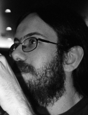

|
Hi there... and welcome to my webpage.
My name is Marcos Daniel Marado Torres, but I'm often known in the
Internet by the handle
of Mind Booster Noori.
I was born in the Yule day of 1982's caste in
Lamego -
Portugal, and
presently I'm working as a Computer Systems
Analyst at
MagicBrain, as well as studying
Computer
Science in Coimbra's University, both in
Coimbra - Portugal.
Here in my web corner you'll be able to find a little more about other things I do,
since this webpage works as a link repository, showing others pages about stuff I'm involved into...
Please feel free to mail me with suggestions, comments and/or critics, all of them are welcome. If you wish to flame or spam me, then please choose someone else from the web. Enjoy... And remember: if you want to contact me here you have: You'll also find me easily on the Portuguese Talkers. |
 |
So, here's the list of serveral pages of stuff somewhat related with me...
To avoid misunderstandings and comments made in the past, the links are shown in alphabetic order.
Last changed on 2005-04-26
? visits since 2003